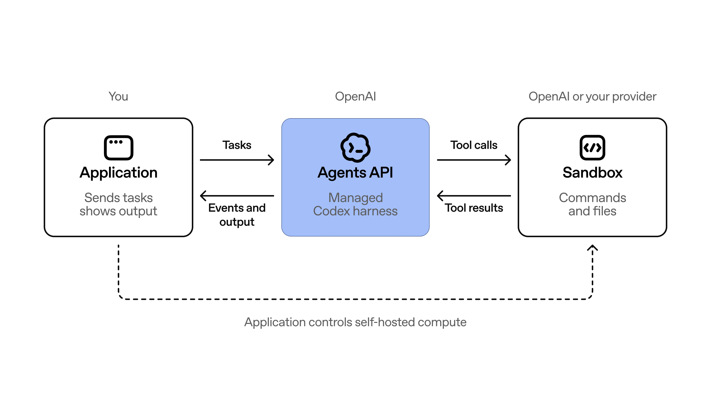

04 OpenAI 게시일 2026.09.10
OpenAI, Agents API 베타 시작

OpenAI가 에이전트용 관리형 API를 내놨다. 핵심은 모델 호출 그 자체보다, 오래 걸리는 작업을 안정적으로 돌리는 실행 구조를 서비스로 제공하는 데 있다. 개발자는 작업, 모델, 도구, 실행 환경만 정하면 된다. OpenAI는 운영 부담을 줄이고 병렬 처리와 문맥 관리도 맡겠다고 했다.
핵심 브리핑
OpenAI는 Agents API를 공개 베타로 출시했다. 이 서비스는 Codex를 돌리던 실행 구조와 인프라를 개발자가 API로 쓸 수 있게 했다. 긴 세션 운영, 도구 사용, 파일 작업, 중간 결과 저장이 핵심 기능이다.
개발자는 한 번의 API 호출로 에이전트를 만들 수 있다. 작업 내용, 모델, 도구, 실행 환경을 지정하면 된다. OpenAI는 하네스를 직접 운영하고 유지한다.
실행 환경은 고를 수 있다. OpenAI가 관리하는 샌드박스를 쓰거나, 자체 인프라에 두거나, 파트너 샌드박스를 붙일 수 있다. 파트너로는 Blaxel, Cloudflare, Daytona, DigitalOcean, E2B, Modal, Oracle, Runloop, Vercel이 언급됐다.
과금 구조도 단순하다.
- 공개 베타는 모든 개발자에게 열림
- Agents API 자체 추가 사용료는 없음
- 사용한 토큰과 도구 비용만 지불
- OpenAI hosted sandbox도 함께 제공

맥락 읽기
이번 발표의 중심은 새 모델이 아니라 에이전트 운영 계층이다. OpenAI는 유용한 에이전트에 긴 문맥 관리, 효율적인 도구 탐색, 하위 에이전트 조정이 필요하다고 설명했다. 많은 팀이 직접 만들던 운영 코드를 플랫폼으로 흡수하려는 움직임으로 볼 수 있다.
OpenAI는 세 가지 운영 기능을 특히 강조했다. 문맥 한도에 가까워지면 이전 내용을 자동 압축해 긴 세션을 이어가게 한다. 필요한 도구 정의만 불러와 토큰 사용량과 비용을 줄인다. 복잡한 과업은 여러 서브에이전트로 나눠 병렬 처리한다.
오픈소스 기반도 강조했다. Agents API는 오픈소스 Codex 하네스를 바탕으로 움직인다. 개발자는 공개 코드로 내부 동작을 살펴볼 수 있다.
업계의 움직임
OpenAI는 여러 생태계 사업자와 손잡고 샌드박스 연동을 붙였다. 이는 에이전트 플랫폼 경쟁이 모델 회사 단독 경쟁이 아니라 인프라 생태계 경쟁으로 번지고 있음을 보여준다. 다만 고객사별 공개 도입 사례나 경쟁사 대응은 이번 발췌에 없다.
시사점과 체크포인트
우리 회사가 에이전트를 도입한다면 직접 오케스트레이션 코드를 짜는 부담을 줄일 수 있다. 장애 분석, 운영 점검, 보고서 취합, 내부 지식 검색처럼 여러 도구를 섞는 업무에 먼저 맞출 수 있다.
검토할 항목은 구체적이다.
- 샌드박스를 OpenAI 관리형으로 둘지, 사내 인프라로 둘지 결정해야 한다
- 파일 저장 위치와 비밀정보 관리 방식을 보안팀이 검토해야 한다
- MCP로 연결할 내부 도구 목록과 권한 범위를 정해야 한다
- 긴 세션 로그와 중간 산출물을 어디까지 보관할지 운영 기준이 필요하다
공개 베타 단계라는 점도 중요하다. 정식 출시 전에는 동작 방식과 성능, 운영 조건이 빠르게 바뀔 수 있다. 핵심 업무에 바로 넣기보다 제한된 파일럿으로 검증하는 편이 안전하다.
주요 용어
원문 정보
제목: Introducing the Agents API
게시일: 2026.09.10